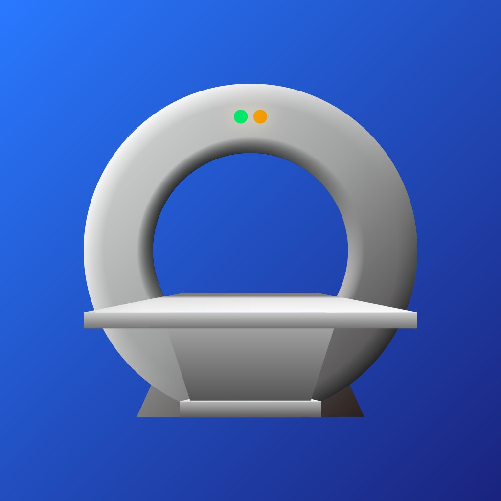

Spatial Medical Image Viewer for Apple Vision Pro
Sample images (CT, MR, and PET) are included with VoxelVision and automatically installed when the app is downloaded from the App Store. The sample images are sourced from The Cancer Imaging Archive (TCIA) and are publicly available de-identified data containing no personally identifiable information.
Armato III, S. G., McLennan, G., Bidaut, L., McNitt-Gray, M. F., Meyer, C. R., Reeves, A. P., … Clarke, L. P. (2015). Data From LIDC-IDRI [Data set]. The Cancer Imaging Archive. https://doi.org/10.7937/K9/TCIA.2015.LO9QL9SX
Armato, S. G., III, et al. (2011). The Lung Image Database Consortium (LIDC) and Image Database Resource Initiative (IDRI): A completed reference database of lung nodules on CT scans. Medical Physics, 38, 915–931. https://doi.org/10.1118/1.3528204
The authors acknowledge the National Cancer Institute and the Foundation for the National Institutes of Health, and their critical role in the creation of the free publicly available LIDC/IDRI Database used in this study.
Bakas, S., Sako, C., Akbari, H., Bilello, M., Sotiras, A., Shukla, G., Rudie, J. D., Flores Santamaria, N., Fathi Kazerooni, A., Pati, S., Rathore, S., Mamourian, E., Ha, S. M., Parker, W., Doshi, J., Baid, U., Bergman, M., Binder, Z. A., Verma, R., … Davatzikos, C. (2021). Multi-parametric magnetic resonance imaging (mpMRI) scans for de novo Glioblastoma (GBM) patients from the University of Pennsylvania Health System (UPENN-GBM) (Version 2) [Data set]. The Cancer Imaging Archive. https://doi.org/10.7937/TCIA.709X-DN49
Bakas, S., Sako, C., Akbari, H., Bilello, M., Sotiras, A., Shukla, G., … Davatzikos, C. (2022). The University of Pennsylvania glioblastoma (UPenn-GBM) cohort: advanced MRI, clinical, genomics, & radiomics. Scientific Data, 9(1), 453. https://doi.org/10.1038/s41597-022-01560-7
Reported research was partly supported by the National Cancer Institute (NCI), the National Institute of Neurological Disorders and Stroke (NINDS), and the National Center for Advancing Translational Sciences (NCATS) of the National Institutes of Health (NIH) under award numbers NINDS:R01NS042645, NCI:U24CA189523, NCI:U01CA242871, NCATS:UL1TR001878, and by the Institute for Translational Medicine and Therapeutics (ITMAT) of the University of Pennsylvania. The content of this publication is solely the responsibility of the authors and does not represent the official views of the NIH, or the ITMAT of the UPenn.
Kinahan, P., Muzi, M., Bialecki, B., Herman, B., & Coombs, L. (2019). Data from the ACRIN 6668 Trial NSCLC-FDG-PET (Version 2) [Data set]. The Cancer Imaging Archive. https://doi.org/10.7937/tcia.2019.30ilqfcl
Machtay, M., Duan, F., Siegel, B. A., Snyder, B. S., Gorelick, J. J., Reddin, J. S., Munden, R., Johnson, D. W., Wilf, L. H., DeNittis, A., Sherwin, N., Cho, K. H., Kim, S., Videtic, G., Neumann, D. R., Komaki, R., Macapinlac, H., Bradley, J. D., & Alavi, A. (2013). Prediction of Survival by [18F]Fluorodeoxyglucose Positron Emission Tomography in Patients With Locally Advanced Non–Small-Cell Lung Cancer Undergoing Definitive Chemoradiation Therapy: Results of the ACRIN 6668/RTOG 0235 Trial. Journal of Clinical Oncology, 31(30), 3823–3830. https://doi.org/10.1200/jco.2012.47.5947
Clark, K., Vendt, B., Smith, K., Freymann, J., Kirby, J., Koppel, P., Moore, S., Phillips, S., Maffitt, D., Pringle, M., Tarbox, L., & Prior, F. (2013). The Cancer Imaging Archive (TCIA): Maintaining and Operating a Public Information Repository. Journal of Digital Imaging, 26(6), 1045–1057. https://doi.org/10.1007/s10278-013-9622-7